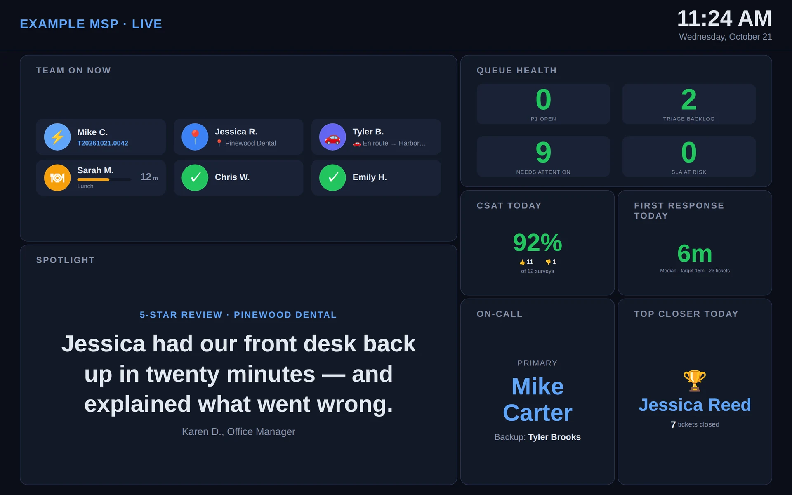

The dispatch board. Live presence from Microsoft Teams and GoTo Connect, pinned to the active ticket, with call timers and a one-click Ping. The dispatcher's "who's actually free?" question, answered automatically — at a glance, all day.
Every MSP has the same scene at 9:30 AM. A P1 lands. The dispatcher looks at the queue, then at Teams to see who's online, then at GoTo to see who's on a call, then DMs three techs to ask "you free?" Two of them are on calls and don't reply for ten minutes. Meanwhile the SLA clock is running.
The Status Board kills that loop. Presence flows in automatically from Teams and GoTo Connect. The board shows who's in a call, who's in a meeting, who's heads-down on a ticket — with the active ticket #, the duration, and a Ping button right there. Dispatch makes the call without asking anyone.
Top-right corner. Color-coded so dispatch can scan a board of 30 cards and see the four available techs in under a second.
How long they've been in this state. Tells dispatch whether to wait it out or interrupt — a 28m meeting is different from a 4m one.
Provider and a running duration timer, so long calls stand out.
When a tech is heads-down, the card expands to show ticket #, issue summary, client, and a live duration. Force Close override for stuck states.
Dispatch nudges a tech in Teams without leaving the board.
If Teams shows green but the tech is on a client call from their cell, one tap puts them in the right state. The board never lies for long.
The board doubles as the dispatcher's launchpad. Three counters across the top show the queues that drive the day: how many tickets are waiting on triage, how many are stalled, how many huddle items still need a follow-up. Click through to act, jump back to see who's free to act on it.

The "who can take this right now?" question, in five chips. Tap "Available" to hide everyone busy. Tap "On Phone" to see who's tied up with whom. Counts update live; chips remember the dispatcher's last view between sessions.
Teams presence is checked every few seconds, so "In a Meeting" and "In a Call" show up almost as soon as they happen.
Call start and end events flow in as they happen, so the board knows who is on the phone.
When a tech starts work on a ticket, Nova pins it to their card with a duration timer.
Lobby displays turn any office TV into a live board. Pick the panels you want — the queue, today's client feedback, who's on call, team milestones and more — and arrange them on a layout builder.

No. Teams, GoTo and Autotask cover most of the day automatically. Manual override exists for edge cases (cell-phone calls, on-site arrivals before geofence triggers).
GoTo Connect alone gets you call presence and ticket pinning. Tell us what you use instead — customer asks shape the roadmap.
Never. The Status Board is internal-only. The Client Portal exposes ticket status and SLAs to clients — totally separate surface, totally separate auth.
Sends the tech a Microsoft Teams message from the dispatcher, without leaving the board.
Yes — with Lobby displays, a TV view built from panels you choose. It pairs to the screen with a PIN.
No — it sits next to it. The Status Board is for the live "who's free?" question; Autotask is still the system of record, and ticket numbers link straight to it.
The "what's broken?" view, paired with the "who's free?" view. Stalled tickets surface themselves; you assign right from the Status Board.
When a call ends, Nova proposes the ticket match in Teams DM. The Status Board flips green; the linker takes it from there.
Mobile check-in flips a tech to "On Site" on the board the moment they arrive.
In the demo we'll connect your Teams + GoTo tenants and show the live board with your real techs by the end of the call.